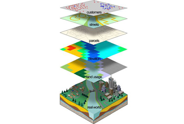
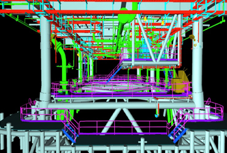
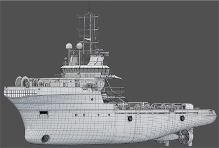
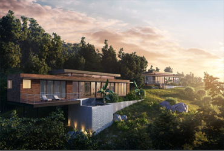
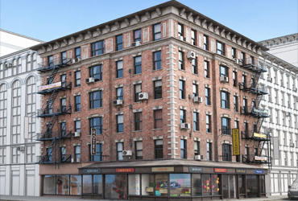

Scan to BIM
v5 virtual design. provides Scan to BIM Modeling Services. We have great expertise in converting the Point Cloud Data into BIM platform such as Revit and other BIM software. We create a complete As-Built Information Model with accuracy depicting the pipes, walls, slabs, roof planes, facade and landscapes in and around the building. We have experience in the creation of LOD 200 to LOD 500 Models for Architectural Elements, Mechanical, Structural, Electrical & Firefighting Elements, Structural Elements and Creation of Integrated Models
Scan to BIM is the process, which uses 3D laser scanning technology to capture the as-built environment. The resulting Survey data called Point cloud is imported into Autodesk Revit. The main advantage of Scan to BIM is its ability to analyze the differences between point cloud and model geometry by creating native.
Using scan to BIM model, data can be exported or imported in a format understandable by electronic surveying equipment that will enable you to read the survey data for as-built conditions and to export design data for field verification.
Let us look at the main application of scan to BIM services.
- * Scan to BIM helps create as-built BIM Models for retrofit, refurbishment and renovation projects.
- * It enables the creation of as-built BIM models for the renovation work of infrastructure assets such as tunnels and bridges.
- * It is used to create as-built BIM models for MEP services that help the managers provide early clash detection alerts.
- * It enhances the creation of intelligent BIM model in Revit by providing accurate point cloud data to the clients.
- * It helps measure points within the scan to find true dimensions quickly.

Lidar
LiDAR technology enables the data capture on field by lighting the target using pulsed laser. As LiDAR also provides elevation data, it finds applications in several industries.
PV5 virtual design provides a wide range of LiDAR data processing services that helps in creating Digital Elevation Models (DEM), Digital Terrain Models (DTM) and Triangulated Inverse Networks (TIN) to provide highly accurate detail of the Earth’s surface. LiDAR data processing services enable the electrical utility industry with the efficient planning and maintenance of electric networks. LiDAR classification also gives a supporting hand to the agricultural sector, by watershed delineation and crop assessment mapping using LiDAR point cloud data. This way, LiDAR classification and LiDAR data processing assists many industrial sectors in planning and making informed decisions.
 |
- * LiDAR data processing of electrical utilities
- * Watershed delineation using LiDAR data processing techniques
- * LiDAR data processing of agricultural features
- * LiDAR data processing of forestry area
- * LiDAR data classification /point cloud classification.
- * LiDAR data processing of oil and gas networks
In addition,V5 virtual design also provides the following services on LiDAR data
- * Drive path alignments
- * 2D and 3D feature extraction
- * LiDAR data processing of agricultural features
- * Extraction of street furniture
- * 3D building modeling

Oil and Gas
We provide a multidisciplinary expertise under one roof, 3D CAD, Plant 3D and PDMS approach enables a wide range of sophisticated design check’s to be carried out across all aspects of the design to check and improve the quality. Our highly skilled resource is capable of dealing with any type of project (Two dimensional plans, as -built three dimensional models & visualization of processing plant, industrial plant. Through our extensive learning experience, we have developed a process that produces highly cost-effective CAD solution to our clients
When it comes to revamp or modification of a refinery site our as built solution gives immense data to all the stake holder of the project to come up with the right expansion plan. We convert as built laser scanned data into various 3D modeling format with a precision of +-2 mm.That's why we are the preferred partner for our oil & gas customers.

3D model
3D modeling is the process of developing a mathematical representation of any surface of an object (either inanimate or living) in three dimensions via specialized software. The product is called a 3D model. Someone who works with 3D models may be referred to as a 3D artist. It can be displayed as a two-dimensional image through a process called 3D rendering or used in a computer simulation of physical phenomena. The model can also be physically created using 3D printing devices.
Models may be created automatically or manually. The manual modeling process of preparing geometric data for 3D computer graphics is similar to plastic arts such as sculpting.
3D modeling software is a class of 3D computer graphics software used to produce 3D models. Individual programs of this class are called modeling applications or modelers.

VISUALIZATION
“Most of the firms in the AEC industry have majorly started utilizing BIM for visualizing purpose.”
There are many benefits of visualizing an AEC project as if it were constructed. It provides a glimpse into the future to the clients through BIM Modeling services. Visualization helps review the concept and design objectives. It can act as a communication tool for the contractor and the consultant. Visualization is relevant in a project lifecycle, from the very beginning to the very end. Visualization has a crucial role in BIM, as it is an effective communication tool for various BIM stakeholder groups.
3D modeling is a technique in computer graphics for producing a 3D digital representation of any object or surface.
An artist uses special software to manipulate points in virtual space(called vertices) to form a mesh: a collection of vertices that form an object.
These 3D objects can be generated automatically or created manually by deforming the mesh, or otherwise manipulating vertices.
 |
3D models are used for a variety of mediums including video games, movies, architecture, illustration, engineering, and commercial advertising.
The 3D modeling process produces a digital object capable of being fully animated, making it an essential process for character animation and special effects.
The core of a model is the mesh which is best described as a collection of points in space.
These points are mapped into a 3D grid and joined together as polygonal shapes, usually triangles or quads. Each point or vertex has its own position on the grid and by combining these points into shapes, the surface of an object is created.
Models are often exported to other software for use in games or movies. But some 3D modeling programs allow the creation of a 2D images using a process called 3D rendering. This technique is fantastic for creating hyper-realistic scenes using sophisticated lighting algorithms.
V5 virtual design 3D experts are capable of providing following services:
- * Interactive 3D visualisations
- * 3D city models (LOD 1 to 5)
- * Building interiors - LOD4
- * 3D Fly-throughs and Walk-throughs
- * Extract 3D features and building models from LiDAR (Airborne, Mobile and Terrestrial – ALS, MTLS & TLS)
- * Photo-realistic 3D visualization with high quality texturing
- * Creation of 3D models using pictometry images, photos and CAD plans
- * 3D visualization of infrastructures, machineries & power stations
V5 virual desin 3D city models help in analyzing the urban issues and implementing new urban infrastructure designs. Apart from this, the Company's 3D visualizations are also used in flood analysis, disaster management, emergency response systems, architectural visualizations, tourism, real estate, security etc.

Texturing
UVW mapping is a coordinate mapping technique that enables artists to project 2D textures onto the surfaces of 3D objects. It's a key skill for all areas of the 3D industry, including film, gaming, and visualization. This course helps designers map geometry in preparation for texturing, using the powerful UVW mapping feature set in 3ds Max, Maya including the UVW Map modifier, UVW Editor, and Blended Box Map.
Instructor Joel Bradley explains what UVWs are, how they affect textures, and why they are needed. He also reviews the different mapping spaces that are available and how procedural maps are used in texturing. Then he progresses to the hands-on portion of the course, starting with mapping simple shapes and models with the UVW modifier. He also reviews advanced topics, such as unwrapping and editing UVs with the UVW Editor. Finally, he introduces blended box mapping, for when you need to get a model ready for texturing quickly.
Topics include:
- • UVW coordinates
- • UV space
- • Working with the UVW Map modifier and UVW gizmo
- • World space vs. object space
- • Peel mapping and pelt mapping
- • Reshaping UV elements
- • Smoothing and relaxing UVs
- • Rendering UV layouts
- • Blending seams with the Blended Box Ma